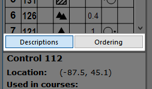

Switch Between Descriptions and Ordering
These two buttons allow changing between two different views in the left hand pane of the main windows.

The "Descriptions" button switches to the usual view, which shows the control descriptions.
The "Ordering" button switches to the control ordering view, which shows the order of controls in the course, along with any variations.